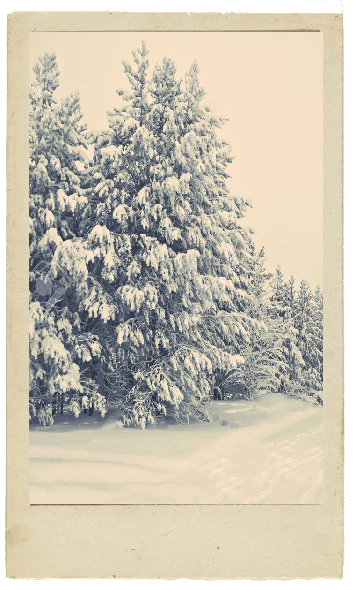

To tremble from cold in the icy snow,
In the harsh breath of a horrid wind;
To run, stamping one's feet every moment,
Our teeth chattering in the extreme cold
Largo
Before the fire to pass peaceful,
Contented days in our home while the rain outside pours down,
and soaks hundreds.

Allegro
We tread the icy path slowly and cautiously,
for fear of tripping and falling.
Then turn abruptly, slip, crash on the ground and,
rising, hasten on across the ice lest it cracks up.
We feel the chill mediterranean wind through the home,
despite the locked and bolted doors...
Sirroco, Boreas, and all the winds join in for battle.
this is winter, but it brings such joy.